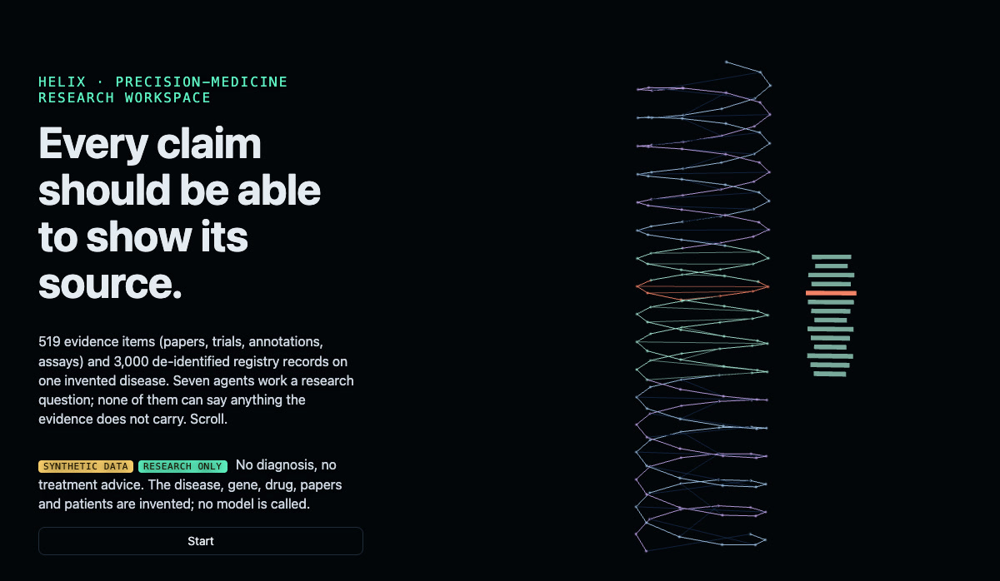
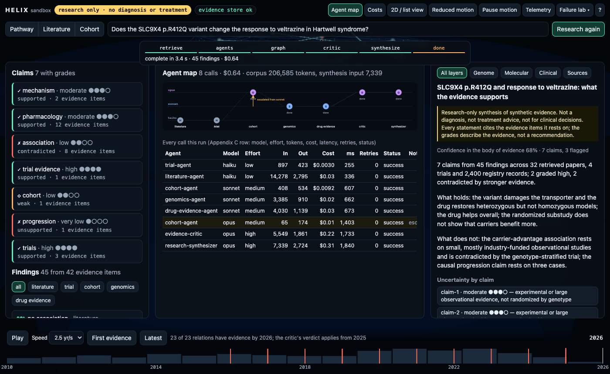
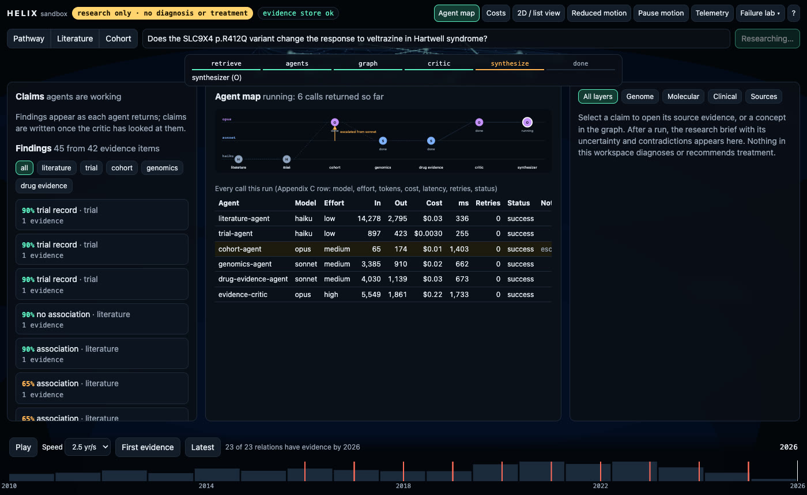
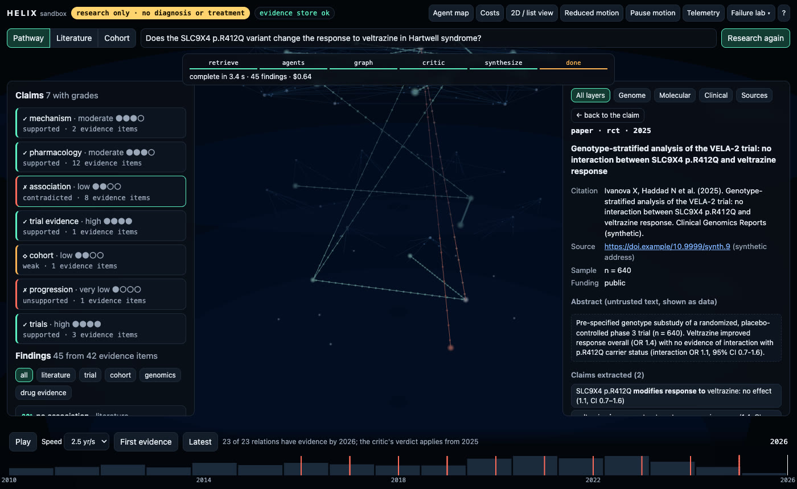
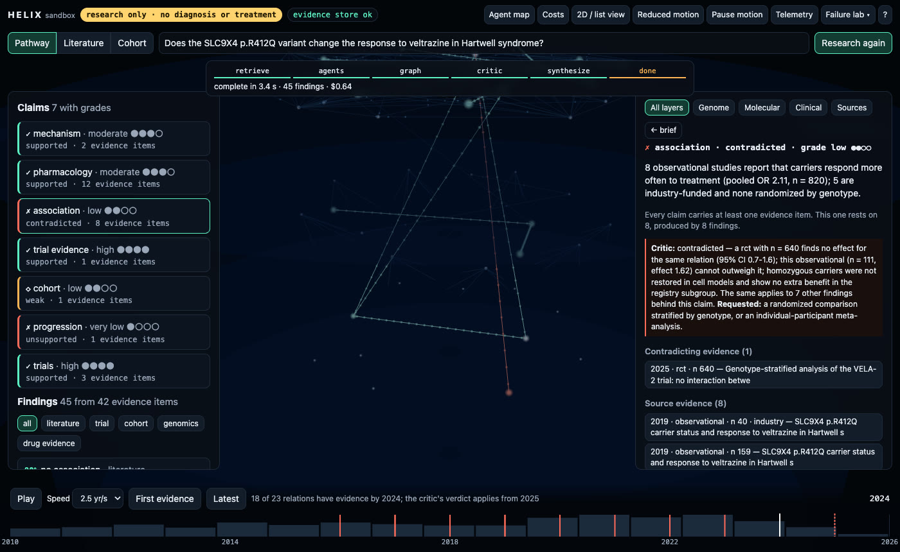
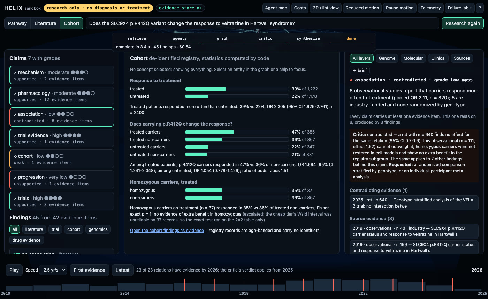
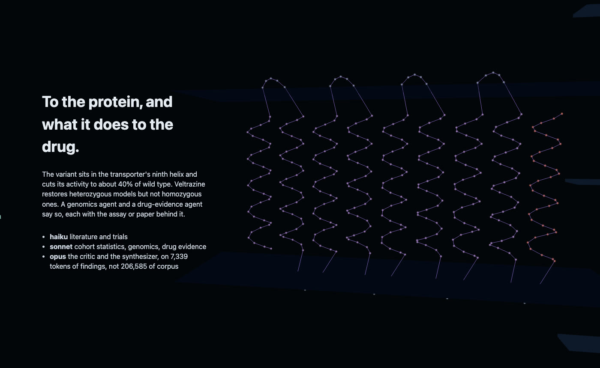

TypeScript · multi-agent · three.js · 2026-10
Which Claim Can Show Its Source?
A research-only precision-medicine workspace on a synthetic disease: seven agents work a typed question, the evidence graph grows as they return, and every claim opens to the papers, trials and registry cells it rests on. 58 of 423 papers kept, 26 preprint duplicates removed, a registry of 2,400 records shown to the model as 18 cells, one escalation (a 37-patient subgroup sent to the strongest model as a 65-token table), and a critic that marks the carrier-benefit claim contradicted by a 640-patient randomized substudy. $0.64 a run at list prices.

Built from blueprint 04 of a written build book (Volume VI, Claude Code multi-agent + motion UI) as one vertical slice. Research only, and everything is synthetic: the disease, gene, variant, proteins, compounds, trials, papers, authors and the 3,000-record registry cohort are generated by the repository and named so that none matches a real one; the cohort holds age bands and coded fields, no identifiers. Nothing in it diagnoses or recommends treatment. No model is called: each application agent is a deterministic analyzer, and a simulated provider charges it tokens by the size of what went in and out at a configured price table; routing, escalation, retries, circuit breaking, caching and the cost telemetry are real code paths covered by tests. Not built: real model calls, PubMed or ClinicalTrials.gov connectors, uploaded-PDF ingestion, Neo4j, OpenSearch, pgvector, Temporal, Kubernetes, Terraform and cloud deployment, SSO, billing.
01 — The problem
A research group asks a question that spans four kinds of evidence: papers, a patient registry, molecular annotations and trials. A model that reads everything is expensive, and its answer is hard to defend: which paper supports which sentence, and did anyone check the one study that disagrees? In a biomedical setting the worse failure is a confident claim that a stronger study quietly contradicts. Can specialist agents work the evidence in parallel, keep patient-level data out of every prompt, and can a critic catch the claim that a larger randomized trial overturns, before anyone writes it down?
The build book's rules for this volume: the cheapest model that can reliably do the task, structured JSON between agents instead of transcripts, never feed raw data to the synthesis model, escalate only the narrow subproblem, record tokens and cost per agent, and keep a human review gate. Blueprint 4 of ten, built as its demo scenario end to end, and the repository ships its own Claude Code configuration (agents, rules, hooks) following the same routing policy.
02 — What I built
A Next.js site that runs the whole workflow in a Web Worker on a synthetic corpus, plus a Fastify API on PostgreSQL that runs the same workflow server-side, persists it and streams progress, started by one docker compose up.
- A synthetic corpus: 95 entities on four layers (genome, molecular, clinical, sources), 519 evidence items (423 papers, 40 trials, 51 bioactivity records, 4 annotations, 1 registry) and 3,000 registry records. Planted inside: 30 preprint duplicates, eight small mostly industry-funded studies that say carriers respond better, one 640-patient randomized substudy that says they do not, a case series that claims causation from three patients, and an abstract that says "ignore previous instructions".
- An agent runtime (
packages/agents): the book's agent contract as a JSON schema with a bundled checker, a router with per-tier escalation, retries with backoff, a circuit breaker, a cache, a deterministic simulated provider, and the Appendix Cagent_invocationstelemetry with its dashboards. - The workflow: deterministic retrieval and cohort aggregation → literature and trial agents (haiku) and cohort, genomics and drug-evidence agents (sonnet) in parallel → evidence graph → critic (opus) → synthesis on compact findings and challenges (opus) → researcher review.
- A motion layer: a DNA helix that the scroll carries to the gene's exons, the transporter protein in its membrane and the evidence graph; edges that grow as agents return and change colour when the critic's verdict applies; a timeline that replays how the evidence accumulated; the selected concept kept across the pathway, literature and cohort views; reduced motion, pause, deep links, a 2D diagram and list view, and a telemetry HUD.
- The repo's own Claude Code setup: CLAUDE.md with the routing policy, 11 shared build agents plus the 7 blueprint agents, rules per area, and hooks that typecheck on edit, block destructive commands and scan for secrets.
03 — How it was built
- 01
Retrieve and aggregate before any model reads anything
The corpus is 206,585 tokens of JSON. Deterministic retrieval ranks papers by how many of the question's concepts they mention and keeps 58 of 423, plus the 4 trials, 3 annotation records and 9 assay records that touch it. The registry is the expensive part: the disease's 2,400 records are 86,748 tokens, so they are aggregated by genotype, treatment and age band into 18 cells of counts, 355 tokens. The cohort agent receives 408 input tokens in all, and never sees a record, which also keeps patient-level data out of every prompt.
const cells = aggregateCohort(cohortRecords); // 2,400 records -> 18 cells of {responders, total} const papers = scored.slice(0, 60); // concepts matched, not embeddings: deterministic and replayable - 02
Five agents, one contract, each on its own slice
Every agent returns the same shape: status, confidence, findings with evidence ids and entity ids, assumptions, warnings, and metrics. A hand-written checker validates it before anything is persisted or passed on; a test shows the checker and the JSON schema agree on 12 malformed outputs. The literature agent (haiku) removes 26 preprints of papers already counted, sets aside 9 near misses such as the drug studied in other diseases, and structures what remains; the trial agent (haiku) finds 3 relevant trials; cohort, genomics and drug evidence (sonnet) run beside them. Potency comes back as 113, 199 and 2,933 nM for wild-type, heterozygous and homozygous models, with a warning that the drug does not rescue homozygotes.
const settled = await Promise.allSettled([literature, cohort, genomics, trial, drug].map(run)); // a failed agent leaves the run partial findings = ok.flatMap((r) => r.findings); // each finding carries the evidence ids it came from - 03
Statistics by code, and the one escalation
The cohort agent computes odds ratios and Wald intervals from the cells: treated patients respond more often than untreated (OR 2.305), and among treated patients carriers respond more often than non-carriers (OR 1.594, 95% CI 1.241 to 2.048). For the 37 treated homozygous carriers it reports a Wald interval and a confidence of 0.5, because a normal approximation on that few records is not reliable. That is below the agent's threshold, so the router escalates that one subproblem: the 2×2 table, 65 tokens, goes to opus, which runs Fisher's exact test (p = 1) and returns 0.8. The cohort agent's other two findings stand, and the registry is never re-sent.
compact: (i, prev) => weak.id === "cohort-homozygous" ? { ...i, cells: [], subgroup: weak.data.table } : i, // escalation climbs a tier on 429/500/timeout or low confidence, never on a malformed answer - 04
A critic that looks for the study that disagrees
The critic reads findings, not papers. For each relation it looks for the same two entities with the opposite direction, and a larger better-designed study outweighs a smaller one: all 8 small positive observational studies (5 industry-funded, pooled OR 2.11) lose to the n = 640 randomized substudy, whose interaction odds ratio is 1.1 with an interval of 0.7 to 1.6. The registry association is only weak, since its effect sits inside that interval: compatible, not confirmed. The case series that says the variant causes faster progression is unsupported: association from three patients is not causation. Each verdict names the evidence it was judged against and what would settle it.
const inside = ci && eff >= ci[0] && eff <= ci[1]; challenges.push({ findingId: f.id, verdict: inside ? "weak" : "contradicted", contradictedBy: opp.map((g) => g.id), request: "a randomized comparison stratified by genotype" }); - 05
Synthesis that cannot write an unsupported sentence
The synthesizer receives 7,339 tokens of findings and challenges and writes 7 claims. A claim without an evidence reference is never written, so every one opens to its source evidence: design, sample size, funding, year, citation, address, the abstract displayed as untrusted text, and the claims extracted from it. Each claim gets a grade from the design behind it, lowered by the critic's verdict, with a reason: 2 are graded high, 3 are flagged, and confidence in the body of evidence is 68%. Open questions name the pending genotype-stratified trial. The review step refuses until the contradicted and unsupported claims are acknowledged, then exports Markdown whose disclaimer and provenance list are part of the file.
const ev = [...new Set(used.flatMap((f) => f.evidence))]; if (!ev.length) return; // no evidence, no claim claims.push({ id, kind, text, evidence: ev, grade: verdict === "contradicted" ? "low" : grade, verdict }); - 06
The graph is state, and the timeline replays it
Each evidence edge has two years: the first year any evidence existed, and the year its critic verdict starts to apply (the year the contradicting trial appeared, 2025). The scene renders the edge teal from its first year and lerps it to red when the cursor passes the flip year; reduced motion makes the change instant, and the 2D diagram draws the same edges as SVG. The animation owns no business logic: the store holds the year and the verdicts, and the scene only draws them. Selecting a claim highlights its concepts and does not move the camera; selecting a concept filters the literature and cohort views.
const want = t.flip !== null && cursor >= t.flip ? STATE_COL[e.state] : STATE_COL.supported; if (s.reduced) a.c.copy(want); else a.c.lerp(want, Math.min(1, dt * 3.5)); - 07
Failure is a demo, not an afterthought
The failure lab arms a 429 storm on the cheap tiers (retries with backoff, then the circuit on sonnet opens, the narrow subproblems escalate and the run still completes), a critic provider outage (the run is partial and says so; the brief carries no verdicts rather than invented ones, and the next run recovers), an evidence-store outage (backoff, the last good corpus stays usable), and a lost GPU context (the 2D diagram and tables carry every fact). Each is a Playwright journey that also checks the recovery.
if (e instanceof ContractError) break; // a malformed answer is not retried blindly const tripped = this.breaker.fail(model); // three failures open the circuit for that tier
04 — Results
The demo. The agent map after a run: haiku for literature and trials, sonnet for cohort, genomics and drug evidence, opus for the critic and the synthesizer, with the one escalation drawn:

The graph while agents return, before the critic has spoken:

A claim and its critic verdict, with the contradicting trial listed above the eight sources it overturns:
The source evidence of the contradicting trial:

The same graph in 2024 and in 2026. The association edge between the variant and the drug is teal before the trial and red after it:

The cohort view, with statistics computed by code on aggregated cells and the homozygous subgroup's exact test after escalation:

The scroll's third chapter, the transporter protein with the variant's helix in red:

Cost of the run at list prices: $0.64. The cheap and mid tiers read 22,998 of 35,951 input tokens for $0.09; opus reads 12,953 (6.3% of the corpus) for $0.55 because the critic and synthesizer write a lot at opus output prices. Routing keeps routine extraction off opus; it does not make critique cheap.
Checks. 55 unit, agent and API tests and 11 Playwright journeys; coverage of the domain, agent and motion code 98.5% of statements. The critic flags every injected contradiction; cohort statistics match hand-computed fixtures; no claim exists without an evidence reference; the export keeps its disclaimer and provenance. Routing: opus input under 8% of the corpus; exactly one escalation with a table of 65 tokens. Prompt injection in an uploaded abstract, and in every retrieved abstract and citation, changes nothing. A fresh run matches the committed cost baseline within 2%. Another tenant gets 404 on this project, its prefixes and its evidence; row-level security blocks a query with no WHERE clause.
Performance. 60 FPS with a real GPU (p95 frame 17.3 ms, 30 draw calls, LCP 148 ms). The API on one process: 880 requests a second at p95 82.9 ms; 2,000 WebSocket subscribers received 29 progress messages each from an 814 ms server-side run.
Watch the 2 min 14 s captioned recording of the whole scenario.
05 — What I'd do next
- Put a real provider behind the same interface for the critic and keep the deterministic one as a control, so the cost and quality columns of the Pareto can be compared for real.
- Connect real sources (PubMed, ClinicalTrials.gov, a variant database) behind the retrieval interface, and add an uploaded-literature path with the same untrusted-text handling.
- Let the cohort agent propose a stratification and have the pipeline aggregate it, so the agent can find a subgroup nobody pre-aggregated without ever seeing a record.
- A rules editor for the critic: what outweighs what, and which wording needs which design, are data, and the researchers should own them.